Đối với các bạn trẻ còn ngồi trên ghế nhà trường ngày nay, mạng Internet vừa là một công cụ giải trí bổ ích,
vừa là một thế giới với vô vàn các trang mạng xã hội, nơi mà các bạn có thể giao lưu và trao đổi kiến thức cùng với nhau.
Tuy nhiên, hiện nay, các hoạt động diễn ra trên mạng của học sinh trường THPT Vĩnh Linh còn phụ thuộc nhiều vào các nền tảng mạng xã hội
có sẵn như Facebook, YouTube,... Ví dụ như cuộc thi viết Book Review do CLB Tiếng Anh của trường tổ chức đầu tháng 3 trên trang Facebook của CLB.
Vì lí do đó, mình đã quyết định tiến hành thiết kế một trang web dành riêng cho các bạn học sinh ở trường THPT Vĩnh Linh. Bên cạnh
mục đích sử dụng để tổ chức các cuộc thi nhỏ lẻ cho các CLB của trường, việc lập ra trang web này có thể cho phép các thầy cô giáo
tổ chức các bài thi online, hoặc chia sẻ các tài liệu học tập như sách tham khảo, giáo trình PowerPoint, ma trận đề thi cũng
như lưu trữ các đề thi của các năm trước để làm nền tảng cho quá trình ôn tập của học sinh, giúp cho các bạn học tập
và trau dồi kiến thức dễ dàng và hiệu quả hơn. Ngoài ra, các bạn học sinh sẽ có thể sử dụng trang web để giao lưu với nhau và
tổ chức các hoạt động dành riêng cho học sinh như các cuộc thi viết văn, nhân các ngày lễ.
Trang web này được tạo ra chủ yếu để phục vụ mục đích thử nghiệm. Những bạn học sinh nào muốn đóng góp kinh phí phần cứng và tên miền
của trang web chính thức thì có thể quyên góp tiền cho mình thông qua mã QR VNPAY ở dưới đây.

Một trang web mang đậm một màu sắc riêng của các thế hệ học sinh trường THPT Vĩnh Linh chắc hẳn là điều mà ai cũng mong muốn.
Mình mong ý tưởng của mình sẽ nhận được sự ủng hộ và hưởng ứng của các bạn. Cảm ơn bạn đã dành thời gian cho bài viết này.
Xin chúc các bạn có một kì nghỉ hè thật sảng khoái và tràn đầy năng lượng!
Nguyễn Cao Long Khánh, A1-K66, THPT Vĩnh Linh